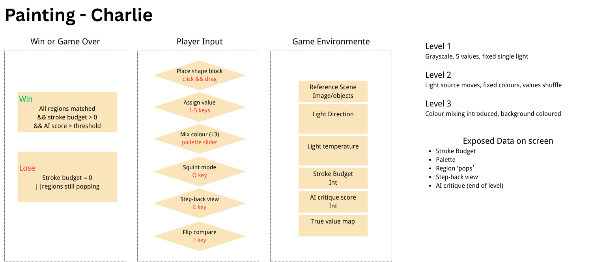

A small game about the hardest thing in painting: seeing light, not objects.
Domain · Painting | Student · Charlie. S | Track A (no build)Concept. You are shown a lit scene. Instead of painting details, you block in the big shapes and assign each one a value from a limited 5-step grayscale (later, mixed colour). A "squint" view blurs your canvas against the reference so you can judge the masses the way a real painter does.
Player goal. Match the reference's value structure — not its outlines — using as few strokes as possible, before the stroke budget runs out.
Core learning shift. key idea "Painting isn't just copying objects. It's all about translating the light you see into objective values and shapes."
Play the Game →Painting from observation. The same object looks completely different under different light direction and temperature, so the painter must identify and understand the light before anything else. The student has painted since childhood and studies art in school.
Beginners paint the picture in their head instead of what they actually see. They start with details (eyelashes, texture) instead of blocking in the big masses, and they assign colours from memory instead of observation.
Experts squint constantly. They read the scene as a few large value shapes, judge each value against its neighbours, and only then refine. They know colour is decided by context, not by the object's "real" colour.
The squint is the perfect game mechanic: blur removes detail and leaves only value relationships. The game makes the invisible (light) visible through pops, step-back, and an end-of-level critique.

System graph: environment data, player input, calculated results, exposed feedback, and the three level presets.
The first reference (a lit sphere + box) is reused for the first three levels so the core skill is drilled before new subjects appear. After that, each level is a different, more interesting reference.
| Preset | Reference | What changes | Skill trained |
|---|---|---|---|
| Level 1 — Grayscale Basics | Sphere + box (first image) | Grayscale, 5 fixed values, single fixed light | Block masses, assign values by observation |
| Level 2 — Moving Light | Sphere + box (first image) | Light source moves right, same grayscale | Re-judge values as light shifts |
| Level 3 — Colour Mixing | Sphere + box (first image) | Colour via hue slider, coloured background | Keep value relationships while mixing colour |
| Apple | Semi-realistic apple | Colour; realistic cool blue-green shadows artists use | Read values even when hue shifts in shadow |
| Bird | Colourful stylised bird | Colour; several big colour masses (body/head/wing) | Block distinct masses before detail |
| Dragon | Simple, fun cartoon dragon | Colour; many friendly masses, final challenge | Hold the whole value read under complexity |
Win: AI score ≥ 80% (a passing grade) and stroke budget > 0. Grading: 0–50 needs improvement · 60 a little work · 70 decent · 80 good · 90 great · 95–100 perfect. Lose: stroke budget reaches 0 before you submit.